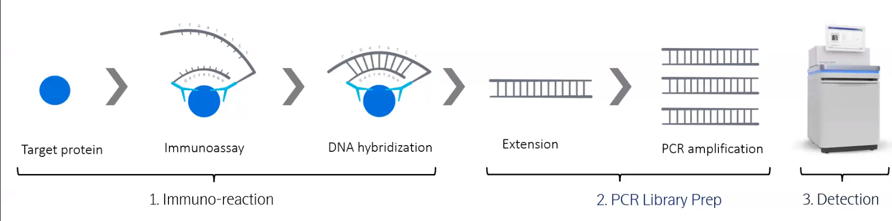

Olink analysis report
| Contract ID | XXXXXX |
| Contract Name | Olink analysis demo report |
| Batch ID | XXXXXX-Z01-J001 |
| Report Time | 2024-12-27 |
| Reminder |
1 Introduction
Olink® Explore HT is a high-multiplex, high-throughput protein biomarker platform intended to measure the relative concentration of proteins in the samples. The technology behind the Olink panels is called Proximity Extension Assay (PEA), which consists of many oligonucleotide antibody-pairs. Each of the oligonucleotide antibody-pairs contains unique DNA sequences allowing hybridization only to each other. Subsequent proximity extension will create unique DNA reporter sequences, enabling the identification of specific proteins through next-generation sequencing.
Protein expression profiles that are identified by the assays may provide relevant insights into real-time human biology and facilitate development of more effective, targeted therapies. The results are typically used by scientists involved in drug development, clinical research or basic life science research who are looking to run large-scale discovery studies focusing on the low abundant proteins, which may be missed by other proteomics techniques, such as mass spectrometry.

Figure 1 Proximity Extension Assay with NGS Workflow
2 Library Construction and Sequencing
Samples and controls are transferred to a sample plate. High-multiplex matched pairs of antibodies, labeled with unique DNA oligonucleotides, bind to their respective proteins in the samples. Proximal oligonucleotides hybridize and undergo extension by Polymerase Chain Reaction (PCR). Final DNA amplicons include specific barcode sequences for each assay and sample specific indexes. The libraries are subsequently pooled, and undergo purification using magnetic beads before sequencing on NovaSeq 6000.

Figure 2 Workflow of Library Construction and Sequencing
3 Bioinformatics Analysis Pipeline

Figure 3 Olink Analysis Pipeline
4 Analysis Results
4.1 Data Normalization and Quality Control
NPX, Normalized Protein eXpression, is Olink’s arbitrary unit which is in Log2 scale. Following sequencing, the raw data is converted to counts, assigning an integer value to each assay-sample combination based on the detected copy numbers. These raw data counts are converted into NPX values, enabling the identification of protein level changes within different sample sets, and establishing protein signatures. In general, a higher NPX value refer to a higher protein concentration.
NPX should be used for relative quantification only. This means:
- NPX values can be compared only for the same protein across the samples analyzed in your project.
- NPX values can not be compared across projects run at separate occasions without the use of reference bridging samples.
The box plot shows the distribution of NPX values for all samples. The line dividing the box represents the median value. The lower edge of the box represents the lower quartile, and the upper edge of the box represents the upper quartile. The vertical lines extending from the box indicate the minimum and maximum values of the data.
Figure 4.1 Sample NPX Distribution Box Plot
The x-axis is the sample name. The y-axis is the NPX value. Red bar represents QC warning samples. Blue bar represents QC pass samples.
4.2 Protein Expression Level Analysis
The standardized NPX value of all samples are used for the following protein expression level analysis.
4.2.1 Principal Component Analysis
Principal component analysis (PCA) is commonly used to evaluate intergroup differences and intragroup sample duplication. PCA uses the linear algebra calculation method to reduce dimension and extract principal components from tens of thousands of variables. We performed PCA analysis on the NPX value of all samples, as shown in the figure below. Under ideal conditions, the samples between groups should be dispersed and the samples within groups should be gathered together.
Figure 4.2 PCA Plot of Groups
Dots in different colours represent different groups. The closer the distance between samples, the higher the similarity between samples.
4.3 Differential Protein Expression Analysis
The protein expression difference is calculated using standardized NPX data, employing the t-test or ANOVA method under different conditions. The t-test is used for comparing a single variable between two groups, while ANOVA is employed when covariates exist and more than two groups are being compared. Significant differentially expressed proteins are then filtered using adjusted p-values.
4.3.1 Result of Differential Expression Analysis
The table shows the first 5 rows of the differential results for the first comparison group.
Table 4.1 Differential Protein List Partial Results Presentation
| Assay | OlinkID | UniProt | Panel | estimate | D0 | D3 | statistic | p.value | parameter | conf.low | conf.high | method | alternative | Adjusted_pval | Threshold |
|---|---|---|---|---|---|---|---|---|---|---|---|---|---|---|---|
| PTN | OID20083 | P21246 | Cardiometabolic | -2.96454607699369 | -0.506236031331593 | 2.4583100456621 | -16.3281624955618 | 8.91093850928438e-42 | 260.994341204173 | -3.32205554142653 | -2.60703661256086 | Welch Two Sample t-test | two.sided | 1.31169014856666e-38 | Significant |
| SMOC1 | OID21461 | Q9H4F8 | Oncology | -1.89655965878608 | -1.74595691906005 | 0.150602739726027 | -14.9681943273322 | 1.18742652057387e-37 | 281.074269044134 | -2.14597274854841 | -1.64714656902375 | Welch Two Sample t-test | two.sided | 8.73945919142372e-35 | Significant |
| SFRP1 | OID20984 | Q8N474 | Neurology | -3.15108639197873 | -1.87133890339426 | 1.27974748858447 | -14.6197752380255 | 6.6984627501749e-36 | 265.131112541086 | -3.57546619043618 | -2.72670659352129 | Welch Two Sample t-test | two.sided | 3.28671238941915e-33 | Significant |
| SDC1 | OID20169 | P18827 | Cardiometabolic | -1.40375131800136 | -0.608070496083551 | 0.795680821917808 | -12.7017701602726 | 1.94251696020892e-31 | 413.416541430656 | -1.62099507578372 | -1.186507560219 | Welch Two Sample t-test | two.sided | 7.14846241356881e-29 | Significant |
| ITGA11 | OID20581 | Q9UKX5 | Inflammation | 0.601215057763153 | -1.15021644908616 | -1.75143150684932 | 11.5346377277788 | 1.38143118302074e-27 | 523.946577538835 | 0.498820149516628 | 0.703609966009679 | Welch Two Sample t-test | two.sided | 4.06693340281306e-25 | Significant |
- Assay: Protein symbol
- OlinkID: Olink specific ID
- UniProt: UniProt ID from UniProt database
- Panel: Name of Olink Panel
- estimate: Difference in mean NPX between groups
- group: Mean NPX of each group
- statistic：Value of the t-statistic
- p.value: P-value for the test
- parameter: Degrees of freedom for the t-statistic
- conf.low: Low bound of the confidence interval for the mean
- conf.high: High bound of the confidence interval for the mean
- method: Method that was used
- alternative: Description of the alternative hypothesis
- Adjusted_pval: Adjusted p-value for the test (Benjamini&Hochberg)
- Threshold: If adjusted p-value is significant or not (< 0.05)
4.3.2 Differential Protein Statistics
The box plot shows the NPX value of the top 2 differentially expressed proteins. The line dividing the box represents the median value. The lower edge of the box corresponds to the lower quartile, while the upper edge of the box corresponds to the upper quartile. The vertical lines extending from the box indicate the minimum and maximum values of the data.
Figure 4.3 Differential Box Plot
At the top of the diagram, the name of differentially expressed proteins are displayed. The Y-axis represents the NPX value, and the results from different groups are shown in different color.
Volcano plots can be used to infer the overall distribution of differentially expressed proteins. In the figure, the x-axis shows the NPX difference between two groups, quantified by the value NPX. Different= NPX. Group 1-NPX. Group 2. The y-axis shows the -log(padj) value (base 10).
Note: Volcano plots are generated from the results of olink_ttest, which represents the differential analysis results of a single variable between two groups.
Figure 4.4 Differential Volcano Plot
The x-axis in the figure is NPX.difference, and the y-axis is -log10pvalue.
4.3.3 Cluster Analysis
All the differentially expressed proteins in the comparison group were pooled as the differential protein set. We used the mainstream hierarchical clustering to cluster the NPX values of proteins. The proteins or samples with similar expression patterns in the heatmap will be gathered together. The color in each grid reflects the NPX value, from red to blue represents from high to low. All samples are labeled by sample name at the bottom, and protein IDs are displayed on the right side. Additionally, top 10 differential expressed proteins were selected to draw the heatmap plot.
Figure 4.5 Differential Expression Protein Clustering Heatmap
Cluster analysis results of differential expressed proteins. Red color indicates proteins with high NPX expression levels, and blue color indicates proteins with low NPX expression levels. The color ranging from red to blue indicates that NPX values where from large to small.
4.4 Functional Analysis
Through the enrichment analysis of the differential expressed proteins, we can find out which biological functions or pathways are significantly associated with differentially expressed proteins. For this purpose, the genes of differential expressed proteins and clusterProfiler (Yu G, 2012) software are used for enrichment analysis, including GO enrichment, KEGG enrichment and Reactome enrichment etc,.

Figure 4.6 Gene Enrichment Analysis Schematic
4.4.1 GO Enrichment Analysis
GO is the abbreviation of Gene Ontology (http://www.geneontology.org/), which is a major bioinformatics classification system to unify the presentation of gene properties across all species. It includes three main branches: biological process, cellular component and molecular function. GO terms with pvalue < 0.05 indicate significant enrichment.
Table 4.2 Partially Displayed Results of Go Enrichment Analysis of Differential Genes
| Category | GOID | Description | GeneRatio | BgRatio | pvalue | padj | geneName | Count |
|---|---|---|---|---|---|---|---|---|
| BP | GO:0050900 | leukocyte migration | 91/747 | 202/4868 | 6.60732587511275e-25 | 2.53919533380583e-21 | PTN/MDK/PDGFB/SERPINE1/APP/CCL13/MSTN/LGMN/KIT/VEGFC/KITLG/CCL3/XCL1/VEGFA/CXCL17/CCL4/CXCL16/CD34/ARTN/PODXL2/THBS4/B4GALT1/VEGFD/PLA2G1B/CCL23/PPIB/CCL21/TNF/ITGB7/CCL19/CCL7/SELP/CCL5/S100A12/GCNT1/SFTPD/CCL17/YES1/CSF1/DPP4/LBP/ADGRE2/LYN/RARRES2/CD200/CCL14/LGALS3/CCL15/CCL16/CALCA/CXCL3/ICAM1/DPEP1/ITGB2/F11R/CD177/CCL24/TNFRSF11A/CCL2/CCL18/TNFRSF14/SRC/CCL20/CXCL9/AIF1/CXCL13/TREM2/IRAK4/PECAM1/CORO1A/ITGB1/CD200R1/SCG2/CRKL/AZU1/FADD/SLAMF8/IL6/SLAMF1/CCL26/SLIT2/CXCL1/CCL11/CD74/F7/GAS6/STAT5B/GP2/PADI2/UMOD/THY1 | 91 |
| BP | GO:0040017 | positive regulation of locomotion | 104/747 | 263/4868 | 6.8556904191361e-23 | 1.317320914037e-19 | PTN/MDK/HGF/PDGFB/SERPINE1/APP/FGFBP1/HBEGF/PDGFA/ANGPT1/MSTN/LGMN/ITGAV/KIT/EGF/SPARC/VEGFC/KITLG/CCL3/NRP2/NTRK3/XCL1/VEGFA/GPNMB/MCAM/CXCL17/CCL4/ANXA3/CXCL16/BMP4/MYOC/ARTN/EPCAM/THBS4/CD274/VEGFD/CCL21/TNF/CCN4/CCL19/CCL7/SELP/CCL5/TGFB1/NRP1/SEMA4D/EPHA1/ITGB1BP1/CSF1/LBP/LYN/RARRES2/LGALS3/ITGA6/CDH5/SPRY2/ICAM1/FGR/RHOC/CD40/CCL24/LRP1/DAB2/STK4/TNFRSF14/SRC/SOD2/F2R/CCL20/PDGFRB/EGFR/AIF1/CLEC7A/CXCL13/VSIR/TREM2/HSPB1/PECAM1/CORO1A/ITGB1/STX4/CEP43/MMP7/IL1B/SCG2/ABL1/CRKL/AZU1/FADD/NTF3/MET/IL6/SLAMF1/CCL26/SLIT2/PDGFC/CCL11/CD74/F7/GAS6/THY1/KDR/CTSH/CCN1 | 104 |
| BP | GO:0000165 | MAPK cascade | 121/747 | 335/4868 | 1.51389194198383e-22 | 1.45447168326097e-19 | SFRP1/HGF/PDGFB/APP/CCL13/PDGFA/NTRK2/ANGPT1/TIMP3/ITGAV/KIT/EGF/KITLG/DKK1/CCL3/NTRK3/XCL1/VEGFA/ERBB2/GPNMB/CXCL17/CCL4/CDH2/BMP4/MYOC/DAG1/TNXB/PLA2G1B/CCL23/CCL21/TNF/FAS/CCL19/CCL7/CCL5/S100A12/CCL17/TGFB1/NRP1/CHI3L1/FGF19/HAVCR2/FLT3/IL18/AMBP/ITGB1BP1/GDF15/SH2B3/CD27/LYN/CRACR2A/PLA2G2A/CEACAM1/TGFA/CCL14/FOXO1/ATP6AP2/CCL15/TRIM5/CCL16/PTPN6/SMPD1/SPRY2/ICAM1/BANK1/CD40/PTPN1/CCL24/ROR1/LRP1/TNFRSF11A/CCL2/STK4/NRTN/CCL18/SRC/F2R/CCL20/PDGFRB/EGFR/MAP4K5/CLEC7A/AXIN1/CCN2/MARCO/SMAD1/TREM2/MAP3K5/IRAK4/LIF/MMP8/IL1B/SCG2/ABL1/FGF21/CRKL/PRDX1/EZR/NTF3/LTBR/IL6/SLAMF1/CCL26/PDGFC/REN/IRAK1/LILRB4/PAK4/IGFBP4/ERBB4/PEBP1/CCL11/CD74/GCG/MAGED1/GAS6/IL11/GSTP1/KDR/CTSH/CCN1 | 121 |
| BP | GO:0023014 | signal transduction by protein phosphorylation | 121/747 | 335/4868 | 1.51389194198383e-22 | 1.45447168326097e-19 | SFRP1/HGF/PDGFB/APP/CCL13/PDGFA/NTRK2/ANGPT1/TIMP3/ITGAV/KIT/EGF/KITLG/DKK1/CCL3/NTRK3/XCL1/VEGFA/ERBB2/GPNMB/CXCL17/CCL4/CDH2/BMP4/MYOC/DAG1/TNXB/PLA2G1B/CCL23/CCL21/TNF/FAS/CCL19/CCL7/CCL5/S100A12/CCL17/TGFB1/NRP1/CHI3L1/FGF19/HAVCR2/FLT3/IL18/AMBP/ITGB1BP1/GDF15/SH2B3/CD27/LYN/CRACR2A/PLA2G2A/CEACAM1/TGFA/CCL14/FOXO1/ATP6AP2/CCL15/TRIM5/CCL16/PTPN6/SMPD1/SPRY2/ICAM1/BANK1/CD40/PTPN1/CCL24/ROR1/LRP1/TNFRSF11A/CCL2/STK4/NRTN/CCL18/SRC/F2R/CCL20/PDGFRB/EGFR/MAP4K5/CLEC7A/AXIN1/CCN2/MARCO/SMAD1/TREM2/MAP3K5/IRAK4/LIF/MMP8/IL1B/SCG2/ABL1/FGF21/CRKL/PRDX1/EZR/NTF3/LTBR/IL6/SLAMF1/CCL26/PDGFC/REN/IRAK1/LILRB4/PAK4/IGFBP4/ERBB4/PEBP1/CCL11/CD74/GCG/MAGED1/GAS6/IL11/GSTP1/KDR/CTSH/CCN1 | 121 |
| BP | GO:0030335 | positive regulation of cell migration | 99/747 | 249/4868 | 5.2724486209855e-22 | 3.80542154885371e-19 | PTN/MDK/HGF/PDGFB/SERPINE1/APP/FGFBP1/HBEGF/PDGFA/ANGPT1/MSTN/LGMN/ITGAV/KIT/EGF/SPARC/VEGFC/KITLG/CCL3/NRP2/NTRK3/XCL1/VEGFA/GPNMB/MCAM/CXCL17/CCL4/ANXA3/CXCL16/BMP4/MYOC/THBS4/CD274/VEGFD/CCL21/TNF/CCN4/CCL19/CCL7/SELP/CCL5/TGFB1/NRP1/SEMA4D/EPHA1/ITGB1BP1/CSF1/LBP/LYN/RARRES2/LGALS3/ITGA6/CDH5/SPRY2/ICAM1/FGR/RHOC/CD40/CCL24/LRP1/DAB2/STK4/TNFRSF14/SRC/SOD2/F2R/CCL20/PDGFRB/EGFR/AIF1/CLEC7A/CXCL13/VSIR/TREM2/HSPB1/PECAM1/CORO1A/ITGB1/STX4/CEP43/MMP7/IL1B/ABL1/CRKL/FADD/NTF3/MET/IL6/SLAMF1/CCL26/PDGFC/CCL11/CD74/F7/GAS6/THY1/KDR/CTSH/CCN1 | 99 |
- Category: Classification of GO databases, including biological processes(BP), cellular components(CC), molecular function(MF).
- GOID: Unique identification id of Gene Ontology database.
- Description: Function description corresponding to the GO number.
- GeneRatio: Ratio between the number of differentially expressed genes in each GO term and all differentially expressed genes that can be found in GO database.
- BgRatio: In background GO database, the ratio of all genes concerning this GO term to all genes.
- pvalue: Statistics category term; abbreviation for probability value.
- padj: Adjusted p-value. Generally, GO Terms with Corrected_pValue < 0.05 are significant enrichment.
- geneName: Differentially expressed genes in this term.
- Count: The number of difference gene annotated to GO number.
In the results of GO enrichment analysis, the top 30 significantly enriched GO Terms were selected for display. If there are fewer than 30 results, all terms will be shown, as depicted in the following figure. The x-axis represents GO Term, while the y-axis represents the significance level of GO Term enrichment. Higher values indicate greater significance. The different colors represent the three subclasses of GO: biological process, cellular component and molecular function.
Figure 4.7 GO Enrichment Analysis Histogram
Note: The x-axis in the figure is GO Term, and the y-axis is GO Term's level of significance of enrichment, expressed as -log10(pvalue). Different colors represent different functional categories.
From the GO enrichment analysis results, the top 30 significantly enriched GO Terms were selected for display. If there are fewer than 30 results, all Terms would be shown. In this figure, the x-axis represents the ratio of differentially expressed genes linked to a specific GO Term to the total number of differentially expressed genes. The y-axis represents GO Term. The size of each point corresponds to the number of genes annotated to that particular GO Term. Additionally, the color gradient ranging from red to purple indicates the level of significance in the enrichment.
Figure 4.8 GO Enrichment Analysis Scatter Plot
The x-axis in the graph is the ratio of the differential gene number to the total number of differential genes on the GO Term, and the y-axis is GO Term.
4.4.2 KEGG Enrichment Analysis
The interactions of multiple genes may be involved in certain biological functions. KEGG(Kanehisa et al., 2000) (Kyoto Encyclopedia of Genes and Genomes) is a collection of manually curated databases containing resources on genomic, biological-pathway and disease information (Kanehisa et al.,2008). Pathway enrichment analysis identifies significantly enriched metabolic pathways or signal transduction pathways associated with genes, comparing the whole genome background. KEGG pathways with a pvalue < 0.05 indicate significant enrichment.
Table 4.3 KEGG Enrichment Analysis Partial Results
| KEGGID | Description | GeneRatio | BgRatio | pvalue | padj | geneName | keggID | Count |
|---|---|---|---|---|---|---|---|---|
| hsa04061 | Viral protein interaction with cytokine and cytokine receptor | 39/479 | 70/2431 | 1.29271437077523e-11 | 3.4127659388466e-09 | CCL13/TNFSF14/CCL3/XCL1/CCL4/TNFRSF10B/CCL23/CCL21/TNF/CCL19/CCL7/CCL5/TNFRSF10A/CCL17/IL2RA/IL18/CSF1/CCL14/CCL15/IL18R1/CCL16/CXCL3/TNFRSF1B/CCL24/CCL2/CCL18/TNFRSF14/TNFSF10/CCL20/CXCL9/CXCL13/TNFRSF10C/IL6ST/LTBR/IL6/CCL26/CXCL1/CCL11/IL10RB | hsa:CCL13/hsa:TNFSF14/hsa:CCL3/hsa:XCL1/hsa:CCL4/hsa:TNFRSF10B/hsa:CCL23/hsa:CCL21/hsa:TNF/hsa:CCL19/hsa:CCL7/hsa:CCL5/hsa:TNFRSF10A/hsa:CCL17/hsa:IL2RA/hsa:IL18/hsa:CSF1/hsa:CCL14/hsa:CCL15/hsa:IL18R1/hsa:CCL16/hsa:CXCL3/hsa:TNFRSF1B/hsa:CCL24/hsa:CCL2/hsa:CCL18/hsa:TNFRSF14/hsa:TNFSF10/hsa:CCL20/hsa:CXCL9/hsa:CXCL13/hsa:TNFRSF10C/hsa:IL6ST/hsa:LTBR/hsa:IL6/hsa:CCL26/hsa:CXCL1/hsa:CCL11/hsa:IL10RB | 39 |
| hsa04060 | Cytokine-cytokine receptor interaction | 79/479 | 205/2431 | 4.40229123229189e-11 | 5.8110244266253e-09 | CCL13/MSTN/CD40LG/TNFRSF8/TNFSF14/CCL3/XCL1/IFNLR1/CXCL17/CCL4/CXCL16/BMP4/PRL/TNFRSF10B/TNFSF12/TNFRSF6B/CSF3/CCL23/CCL21/TNF/TNFRSF4/FAS/CCL19/CCL7/CCL5/IL17RB/TNFRSF13B/TNFRSF10A/CCL17/TGFB1/IL2RA/IL1RAP/RELT/IL18/GDF15/CSF1/CD27/BMP6/LIFR/CCL14/CCL15/IL18R1/CCL16/TNFRSF9/CXCL3/TNFRSF12A/IL17C/CD40/TNFRSF1B/CCL24/TNFRSF11A/CCL2/IL4R/CCL18/TNFRSF14/TNFSF13B/TNFSF10/CCL20/CXCL9/TNFRSF11B/CXCL13/IFNL1/LIF/CD70/IL1B/IL5RA/TNFRSF10C/IL13RA1/IL6ST/IL7R/LTBR/IL6/IL17D/CCL26/CXCL1/CCL11/CTF1/IL10RB/IL11 | hsa:CCL13/hsa:MSTN/hsa:CD40LG/hsa:TNFRSF8/hsa:TNFSF14/hsa:CCL3/hsa:XCL1/hsa:IFNLR1/hsa:CXCL17/hsa:CCL4/hsa:CXCL16/hsa:BMP4/hsa:PRL/hsa:TNFRSF10B/hsa:TNFSF12/hsa:TNFRSF6B/hsa:CSF3/hsa:CCL23/hsa:CCL21/hsa:TNF/hsa:TNFRSF4/hsa:FAS/hsa:CCL19/hsa:CCL7/hsa:CCL5/hsa:IL17RB/hsa:TNFRSF13B/hsa:TNFRSF10A/hsa:CCL17/hsa:TGFB1/hsa:IL2RA/hsa:IL1RAP/hsa:RELT/hsa:IL18/hsa:GDF15/hsa:CSF1/hsa:CD27/hsa:BMP6/hsa:LIFR/hsa:CCL14/hsa:CCL15/hsa:IL18R1/hsa:CCL16/hsa:TNFRSF9/hsa:CXCL3/hsa:TNFRSF12A/hsa:IL17C/hsa:CD40/hsa:TNFRSF1B/hsa:CCL24/hsa:TNFRSF11A/hsa:CCL2/hsa:IL4R/hsa:CCL18/hsa:TNFRSF14/hsa:TNFSF13B/hsa:TNFSF10/hsa:CCL20/hsa:CXCL9/hsa:TNFRSF11B/hsa:CXCL13/hsa:IFNL1/hsa:LIF/hsa:CD70/hsa:IL1B/hsa:IL5RA/hsa:TNFRSF10C/hsa:IL13RA1/hsa:IL6ST/hsa:IL7R/hsa:LTBR/hsa:IL6/hsa:IL17D/hsa:CCL26/hsa:CXCL1/hsa:CCL11/hsa:CTF1/hsa:IL10RB/hsa:IL11 | 79 |
| hsa05144 | Malaria | 21/479 | 35/2431 | 1.51139982422539e-07 | 1.33003184531834e-05 | SDC1/HGF/COMP/CD40LG/THBS4/CSF3/TNF/SELP/TGFB1/IL18/THBS2/ICAM1/ITGB2/CD40/LRP1/CCL2/PECAM1/KLRB1/IL1B/MET/IL6 | hsa:SDC1/hsa:HGF/hsa:COMP/hsa:CD40LG/hsa:THBS4/hsa:CSF3/hsa:TNF/hsa:SELP/hsa:TGFB1/hsa:IL18/hsa:THBS2/hsa:ICAM1/hsa:ITGB2/hsa:CD40/hsa:LRP1/hsa:CCL2/hsa:PECAM1/hsa:KLRB1/hsa:IL1B/hsa:MET/hsa:IL6 | 21 |
| hsa04514 | Cell adhesion molecules | 35/479 | 89/2431 | 1.04479582173538e-05 | 0.000689565242345349 | SDC1/SDC4/CNTN1/CD58/CD40LG/ITGAV/ICOSLG/L1CAM/CDH2/CD34/VCAN/PTPRS/CD274/ITGB7/NCAM1/SELP/NCAM2/PTPRF/NECTIN2/CNTN2/ITGA6/CDH5/ICAM1/ITGB2/CD40/F11R/ESAM/CD276/PVR/VSIR/PECAM1/ITGB1/CD28/ICAM3/ITGAM | hsa:SDC1/hsa:SDC4/hsa:CNTN1/hsa:CD58/hsa:CD40LG/hsa:ITGAV/hsa:ICOSLG/hsa:L1CAM/hsa:CDH2/hsa:CD34/hsa:VCAN/hsa:PTPRS/hsa:CD274/hsa:ITGB7/hsa:NCAM1/hsa:SELP/hsa:NCAM2/hsa:PTPRF/hsa:NECTIN2/hsa:CNTN2/hsa:ITGA6/hsa:CDH5/hsa:ICAM1/hsa:ITGB2/hsa:CD40/hsa:F11R/hsa:ESAM/hsa:CD276/hsa:PVR/hsa:VSIR/hsa:PECAM1/hsa:ITGB1/hsa:CD28/hsa:ICAM3/hsa:ITGAM | 35 |
| hsa04062 | Chemokine signaling pathway | 30/479 | 76/2431 | 4.20595776796901e-05 | 0.00222074570148764 | CCL13/CCL3/XCL1/CCL4/CXCL16/CCL23/CCL21/CCL19/CCL7/CCL5/CCL17/LYN/CCL14/CCL15/CCL16/CXCL3/FGR/CCL24/CCL2/CCL18/SRC/CCL20/CXCL9/IKBKG/CXCL13/CRKL/CCL26/CXCL1/CCL11/STAT5B | hsa:CCL13/hsa:CCL3/hsa:XCL1/hsa:CCL4/hsa:CXCL16/hsa:CCL23/hsa:CCL21/hsa:CCL19/hsa:CCL7/hsa:CCL5/hsa:CCL17/hsa:LYN/hsa:CCL14/hsa:CCL15/hsa:CCL16/hsa:CXCL3/hsa:FGR/hsa:CCL24/hsa:CCL2/hsa:CCL18/hsa:SRC/hsa:CCL20/hsa:CXCL9/hsa:IKBKG/hsa:CXCL13/hsa:CRKL/hsa:CCL26/hsa:CXCL1/hsa:CCL11/hsa:STAT5B | 30 |
-
KEGGID: Unique identification id of KEGG database.
Description: Function description of this pathway.
GeneRatio: Ratio between the number of genes in each pathway and all differentially expressed genes that can be found in KEGG database.
BgRatio: In background KEGG database, the ratio of all genes concerning this KEGG term to all genes.
pvalue: Statistics category term; abbreviation for probability value.
padj: Adjusted p-value. Generally, KEGG pathway with Corrected_pValue < 0.05 are significant enrichment.
geneName: genes in this pathway.
keggID: Pathway gene id.
Count:Number of genes concerning this pathway.
In the KEGG enrichment results, the 20 significantly enriched KEGG pathways were selected for display. If there are fewer than 20 results, all pathways will be shown, as depicted in the following figure. In this figure, the x-axis represents the KEGG pathway, while the y-axis represents the significance level of the pathway enrichment. Higher values indicate greater significance.
Figure 4.9 KEGG Enrichment Analysis Histogram
The x-axis is the KEGG pathway, and the y-axis is the significance level of pathway enrichment.
From the KEGG enrichment results, the top 20 significantly enriched KEGG pathways were selected for display. If there are fewer than 20 results, all pathways will be shown. In this figure, the x-axis represents the ratio of differentially expressed genes linked to a specific KEGG pathway to the total number of differentially expressed genes. The y-axis represents the KEGG pathway. The size of each point corresponds to the number of genes annotated to that particular KEGG pathway. Additionally, the color gradient ranging from red to purple indicates the level of significance in the enrichment.
Figure 4.10 KEGG Enrichment Scatter Plot
The x-axis in the graph is the ratio of the number of differential genes on the KEGG pathway to the total number of differential genes, and the y-axis is KEGG pathway.
4.4.3 Reactome Enrichment Analysis
The Reactome database integrates various reactions and biological pathways of human model species. The Reactome pathway enrichment results, with a pvalue threshold of less than 0.05 for significant enrichment, are displayed in the following table.
Table 4.4 Reactome Enrichment Analysis Partial Results
| ReactomeID | Description | GeneRatio | BgRatio | pvalue | padj | geneName | Count |
|---|---|---|---|---|---|---|---|
| R-HSA-1474244 | Extracellular matrix organization | 59/604 | 300/10955 | 3.67581169653521e-18 | 3.98457987904416e-15 | SDC1/ITGA11/COMP/PDGFB/SERPINE1/SDC4/APP/SPP1/PDGFA/BGN/ITGAV/MMP1/SPARC/NID2/TIMP1/NID1/BMP4/PRSS2/VCAN/PTPRS/DAG1/TNXB/PPIB/MMP3/ITGB7/NCAM1/TGFB1/CTSL/LAMA4/AGRN/CTRB1/CEACAM1/ITGA6/ICAM1/CTSS/ITGB2/F11R/DCN/MFAP5/ACAN/ICAM4/BCAN/PECAM1/ITGB1/MMP8/CTSB/MMP7/COL18A1/P4HB/COL9A1/COL6A3/ICAM3/CASP3/LTBP2/MMP10/ITGAM/ICAM5/LTBP3/KDR | 59 |
| R-HSA-449147 | Signaling by Interleukins | 69/604 | 473/10955 | 5.11070388498188e-14 | 2.77000150566018e-11 | SDC1/HGF/APP/MMP1/CCL3/TIMP1/VEGFA/IFNLR1/CCL4/CSF3/CASP1/TNF/MMP3/CCL19/CCL5/S100A12/TXLNA/IL17RB/TGFB1/FCER2/YES1/IL2RA/IL1RAP/HAVCR2/IL18/CSF1/LBP/LYN/LIFR/FOXO1/CRLF1/IL18R1/PTPN6/IL17C/ICAM1/ITGB2/TNFRSF1B/INPPL1/CCL2/IL4R/PSMD9/SOD2/CCL20/IKBKG/IFNL1/IRAK4/LIF/ITGB1/CA1/STX4/IL1B/IL5RA/IL13RA1/P4HB/CRKL/CDKN1A/IL6ST/IL7R/IL6/IRAK1/CXCL1/CASP3/CCL11/IL18BP/CTF1/ITGAM/STAT5B/IL10RB/IL11 | 69 |
| R-HSA-6783783 | Interleukin-10 signaling | 19/604 | 47/10955 | 1.51113218975659e-12 | 4.7913453764901e-10 | CCL3/TIMP1/CCL4/CSF3/TNF/CCL19/CCL5/FCER2/IL18/CSF1/ICAM1/TNFRSF1B/CCL2/CCL20/LIF/IL1B/IL6/CXCL1/IL10RB | 19 |
| R-HSA-202733 | Cell surface interactions at the vascular wall | 32/604 | 137/10955 | 1.76802412416609e-12 | 4.7913453764901e-10 | SDC1/SDC4/ANGPT1/CD58/ITGAV/MMP1/L1CAM/EPCAM/TNFRSF10B/GP6/SELP/TNFRSF10A/TGFB1/YES1/LYN/DOK2/CEACAM1/ITGA6/PTPN6/ITGB2/F11R/CD177/SRC/PSG1/ESAM/PECAM1/ITGB1/GPC1/JCHAIN/CD74/ITGAM/GAS6 | 32 |
| R-HSA-6798695 | Neutrophil degranulation | 63/604 | 481/10955 | 8.2838852159545e-11 | 1.79594631481894e-08 | CD58/ITGAV/PRCP/ARSB/PRSS2/B4GALT1/CD63/MNDA/ADGRE5/CANT1/S100A12/GLB1/VAT1/MPO/CHI3L1/BST2/SNAP23/TXNDC5/CRACR2A/CLEC4C/CEACAM1/ATP6AP2/LGALS3/SRP14/PTPN6/IQGAP2/CTSS/FGR/CKAP4/ITGB2/TNFRSF1B/CD177/DPP7/GGH/HMOX2/PLAUR/SNAP29/IRAG2/DBNL/HSPA1A/PECAM1/MMP8/RAB37/CTSB/BIN2/RNASE3/CD33/LAIR1/AZU1/SERPINB1/ACAA1/CD14/CTSZ/PIGR/FUCA1/CXCL1/LTA4H/ITGAM/CTSC/GSTP1/PADI2/MME/CTSH | 63 |
- ReactomeID: Unique identification id of Reactome database.
- Description: Function description of this pathway.
- GeneRatio: Ratio between the number of differentially expressed genes in each Reactome ID and all differentially expressed genes that can be found in Reactome database.
- BgRatio: In background Reactome database, the ratio of all genes annotated on this Reactome pathway and all genes.
- pvalue: Statistics category term; abbreviation for probability value.
- padj: Adjusted p-value. Generally, Reactome pathways with Corrected_pValue < 0.05 are significant enrichment.
- geneName: Differentially expressed genes in this pathway.
- Count: Number of differentially expressed genes concerning this pathway.
In the Reactome enrichment results, the top 20 significantly enriched Reactome pathways were selected for display. If there are fewer than 20 results, all pathways will be shown, as depicted in the following figure. The x-axis represents the Reactome pathway, while the y-axis indicates the significance level of pathway enrichment. Higher values on the y-axis correspond to greater significance.
Figure 4.11 Reactome Enrichment Analysis Histogram
The x-axis is the Reactome pathway, and the y-axis is the significance level of pathway enrichment.
From the Reactome enrichment analysis results, the top 20 significantly enriched Reactome pathways were selected for display. If there are fewer than 20 results, all pathways will be shown. In the figure, the x-axis represents the ratio of differentially expressed genes linked to a specific Reactome pathway compared to the total number of differential genes. The y-axis represents the Reactome Pathway. The size of each data point corresponds to the number of genes annotated to a specific Reactome pathway, while the color gradient ranging from red to purple indicates the level of significance in the enrichment.
Figure 4.12 Reactome Enrichment Analysis Scatter Plot
The x-axis in the graph is the ratio of the number of differential genes on the Refectome pathway to the total number of differential genes in the Reactome pathway. The y-axis is Reactome pathway.
4.4.4 Protein-Protein Interaction Network Analysis
The protein-protein interaction network is constructed for differentially expressed genes by searching the STRING protein interaction database. STRING.
Protein-protein interactions are provided as a network file that can be imported into Cytoscape software for visualization and editing. The central organizing metaphor of Cytoscape is a network graph, where molecular species are represented as nodes and intermolecular interactions are represented as edges.
- Customized network data display using powerful visual styles.
- View superposition of gene expression ratios and p-values on the network. Expression data can be mapped to node color, label, border thickness, or border color, etc. according to user-configured colors and visualization schemes.
- Layout networks in two dimensions. A variety of layout algorithms are available, including cyclic and spring-embedded layouts.
- Zoom in/out and pan for browsing the network.
- Use the network manager to easily organize multiple networks. And this structure can be saved in a session file.
- Use the bird's eye view to easily navigate large networks.
- Easily navigate large networks (consisting of 100,000+ nodes and edges) using an efficient rendering engine.
5 Appendix
5.1 Software
| Analysis | Software | Version | Parameter | Remarks |
|---|---|---|---|---|
| olink | OlinkAnalyze | 3.5.1 | - | - |
| Enrichment Analysis | clusterProfiler | 3.8.1 | P-value < 0.05 | For GO, KEGG enrichment analysis |
5.2 Methods
Method details involved in the project are available at methods
File catalog: methods
5.3 Result File Decompression Method and Format Description
| Compressed format | Customer type | Uncompressed method |
|---|---|---|
| compressed files in the fomat of *.tar: | Unix/Linux/Mac user | use tar -xvf *.tar command |
| Windows user | use uncompressed software such as WinRAR, 7-Zip et al | |
| compressed files in the format of *.gz: | Unix/Linux/Mac user | use gzip –d *.gz command |
| Windows user | use uncompressed software such as WinRAR, 7-Zip et al | |
| compressed files in the format of *.zip: | Unix/Linux/Mac user | use unzip *.zip command |
| Windows user | use uncompressed software such as WinRAR, 7-Zip et al |
| File type | Document description | Open mode |
|---|---|---|
| file. parquet | Parquet file is built to show the NPX result, each record containing sample, assay, NPX value and other useful information for analysis. | Windows/ Mac user use DBeaver to view, query and export Parquet data. |
| file.txt/xls | Table result file; files are separated by(Tab). | unix/Linux/Mac users use less or more commands |
| windows users use editor Editplus/Notepad++ et al, also can use Microsoft Excel to open. | ||
| file.pdf/svg | Figure result files; vectorgraph, can be zoom in or out. It is very convenientfor customer to view or edit. Using Adobe Illustrator to edit,the picture can be used in paper for publishing. | Windows/Mac user use Adobe Reader/Foxit reader/web browser to open；unix/Linux user use evince command to open. |
| file.png | Image file, bitmap, loseless compression. | Unix/Linux/Mac user use display command. |
| Windows user use Image browser，such as photoshop et al. |
6 Reference
Kanehisa M, Goto S. KEGG: kyoto encyclopedia of genes and genomes[J]. Nucleic acids research, 2000, 28(1): 27-30.(KEGG)